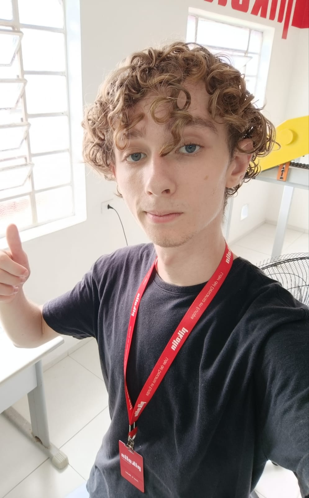

Sobre Mim
Meu Nome
José Vitor Mader
Minha Biografia
💻 Programador | Desenvolvedor de Aplicativos | Ciência de Dados
Atualmente, curso Técnico em Desenvolvimento de Sistemas e Técnico em Ciências de Dados, combinando conhecimento em programação e análise de dados para desenvolver soluções inovadoras.
Tenho experiência em JavaScript, HTML, CSS e SQL, criando aplicações funcionais e eficientes.
Sou o desenvolvedor do STUDENTOOK, um aplicativo para a disponibilização de livros didáticos do PNLD para estudantes de escolas públicas, projeto que conquistou o 2º lugar na XVI Feira Estadual FECITEC em 2024.
Também fui vencedor do Desafio de Dados da Vivo (nacional) em 2024, alcançando o 1º lugar com o projeto Fuuto, um aplicativo com inteligência artificial para gestão de alimentos e redução do desperdício nas escolas públicas estaduais de Santa Catarina.
Busco sempre aprimorar minhas habilidades e desenvolver projetos que causem impacto positivo na sociedade. 🚀
Minhas Habilidades
- Comunicativo
- Inglês Fluente
- Proativo
- Ágil
- Facilidade em se adaptar
- Conhecimento do pacote Office
- Conhecimento em Linguagens de Programação
Meus Hobbies
- Ler
- Programar
- Ouvir Música
- Escrever
Minhas Premiações
2º Lugar no Innovation Camp da JA Brasil

Competição voltada para inovação e empreendedorismo, destacando ideias criativas e aplicáveis ao mercado.
2º Lugar na XXVI FECITEC Estadual

Feira Estadual de Ciência e Tecnologia, premiando projetos de impacto acadêmico e social.
1º Lugar no Nacional do Desafio de Dados da Vivo

Competição nacional promovida pela Vivo, premiando a melhor solução em análise de dados e inteligência artificial.
Meus Projetos
Fuuto - Inteligência Artificial para Gestão de Alimentos
O Fuuto é um aplicativo inovador que utiliza inteligência artificial para transformar a gestão de alimentos nas escolas públicas estaduais de Santa Catarina. O projeto nasceu com o propósito de reduzir o desperdício de alimentos e promover a sustentabilidade dentro do ambiente escolar, otimizando o uso dos ingredientes na preparação das refeições.
🎯 Objetivo Geral
O Fuuto busca reduzir desperdícios na cozinha escolar por meio de um aplicativo integrado com inteligência artificial, que auxilia os profissionais na definição das quantidades adequadas de ingredientes para cada refeição, tornando o preparo mais eficiente e sustentável.
📌 Objetivos Específicos
- ✅ Gestão inteligente de alimentos – Desenvolvimento de um aplicativo que calcula automaticamente as quantidades adequadas de ingredientes com base no número de estudantes presentes a cada refeição.
- ✅ Monitoramento do consumo – Implementação de um sistema de visão computacional acoplado à lixeira orgânica do refeitório para detectar os alimentos menos consumidos pelos estudantes.
- ✅ Feedback sobre a merenda escolar – Criação de uma plataforma onde os estudantes podem avaliar os alimentos servidos, permitindo ajustes no cardápio conforme suas preferências e incentivando uma alimentação mais atrativa e nutritiva.
- ✅ Redução do desperdício e incentivo à adubação – Utilização de técnicas sustentáveis, como compostagem dos resíduos orgânicos, para minimizar o impacto ambiental e, ao mesmo tempo, incentivar o uso de produtos orgânicos na alimentação escolar.
Com essa abordagem, o Fuuto busca não apenas otimizar a gestão dos alimentos nas escolas, mas também conscientizar estudantes e profissionais sobre a importância da sustentabilidade, tornando o ambiente escolar um espaço mais inovador e ecologicamente responsável. 🚀♻️
Links
Saiba mais sobre mim no meu GitHub! 
Também possuo uma conta na plataforma do LinkedIn!
Conhecça mais sobre o Fuuto no nosso Site Oficial!